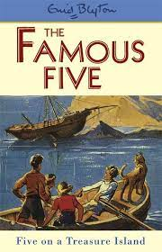
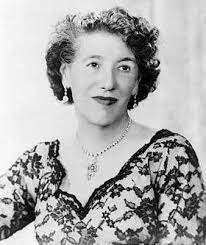

My favorite hobbie is reading book. My favorite book is Percy jackson. It is written by Rick Riordan. I got this habbit naturally. I am in 5th grade 10yrs. I love reading books in my free time rather that watching TV. Books give a lot of knowelegde. Books can also give you thoughts to write a book. I have already started writing a book. It is caled The Famous Explorers. Everyone should get a habbit of reading books. Books are the best sorce of entertainment.
Some books I read

By Enid Blyton

By Rick Riordan
My work
The Famous Explorers
1. Discovery of a new seed.
It’s World environment day, two girls who were sisters, Emily & Evelyn were planting trees at their school. Their three friends Lucy, Alex & Peter were also planting trees with them. While Lucy was picking up her second seed to plant, she noticed that it was different from the other seeds. She showed it to her friends. They were quite shocked to see that kind of seed. It was a white seed with glittery orange stripes on it and it had “plant me” written on it. “Let’s plant it and see what happens”, said Peter. So Lucy planted it and everyone watched closely.
That day they couldn’t sleep as everyone was curious to know how the new plant will look like. The next day everyone quickly got dressed & rushed to their school. After class they ran to the ground to check if a little sapling grew from the seed. But no, it wasn’t a sapling, it wasn’t a little plant, but it was a giant tree. It was not a usual green colour tree, it was an orange colour tree. “This tree is extraordinary” said Evelyn watching the tree closely. “Plus it grew so fast”. They quickly called their
classmates and teacher before they walked out of school to show the tree to them.” How did this tree grow?” questioned one of their classmate Justin. “I’ll tell you how it grew” said Peter smiling. Even the teacher wanted to know how it grew. Everyone sat on the grass while Peter was telling about the tree. Everyone was astonished after hearing about it.” But where did the seed come from?” asked Justin again. “We don’t know” answered Emily to his question. It was late everyone had to go home. For a few months everyone forgot about the tree, as there exams were nearby. The exams got over and the results came too. Emily, Evelyn, Lucy & Alex got A+ so they were happy. But poor Peter got an F so he was very sad. Everyone was so happy that they forgot about him and went home. He bowed his head wondering what his mum would do to him. Peter didn’t even look up to see his friends who were so happy with their grades. He did not wanted to go home so he went to the school field. After sometime he saw something in orange colour. He looked up to see what it was. “The orange tree we planted!” shouted Peter in surprise. He rushed to his friends to show them the tree.
“The tree we planted, we almost forgot about it” exclaimed Evelyn in great happiness. “Yeah, I know and it didn’t even die even though it has been a long time.” said Evelyn. Everyone was very happy to see the tree. “Let’s go and find some more seeds, there may be many more” said Lucy. ”Yes, and we won’t let anyone know, we might be famous by discovering more of these type of seeds” added Peter waiting to be famous. Everyone laughed and then they started to search for those special seeds. When Emily was searching for the seeds, she suddenly fell into a hole. She screamed for help. Everyone came rushing towards Emily. They looked down the hole and smiled. “What are you all smiling at, I’ve fallen down in a hole, please help me quick” screamed Emily. ”Look below you” said Lucy. So Emily looked below her and was full of happiness. Alex had a rope with him. They quickly pulled her with the rope. “More of the unique seeds” screamed Emily suddenly. “And there are many more colours of the seeds, like red, yellow, blue, purple and pink”. “Let’s plant them quickly” said Peter with happiness all over his face. So they tried to pick up the seeds from the hole but they couldn’t reach. Then Lucy had an idea. “Give me the rope, Alex” she said with a bright smile on her face. So Peter gave the rope to her. Then she tied the rope to her waist and gave the rest to Evelyn. Then she instructed Evelyn to hold rope while she is in the hole to pick up the seeds. Evelyn did as she told was told. When Lucy tried to pick the seeds, the seeds started to bounce. “AAAH…! Bouncing seeds, quickly pull the rope, Evelyn!” she screamed. Evelyn tried to pull the rope quickly, but she couldn’t. She was too weak to pull up Lucy. Then Peter, Alex & Emily helped Evelyn to pull Lucy up. “Oh my! I never expected seeds bounce!” said Lucy frightened to go in the hole. ”But how will we get those seeds now?” said Emily wondering. Suddenly it started to rain. “AAHH…! We’re getting drenched.” screamed Evelyn. There was a shed place with some plastic blue chairs. They quickly ran over there and sat on the chairs. Lucy had a little pink towel with her so she dried herself with it. They all took turns drying themselves with her towel and gave it back to her. After the rain stopped they went home saying “bye” to each other repeatedly. Emily and Evelyn kept on discussing about the seeds. The next day was Saturday which was the start of the weekends. Their school was closed. The kids eagerly wanted to go to school the first time. They often didn’t like going to school but today the really wanted to because of the seeds. It continuously rained in the weekends. Then came Monday and it didn’t rain that day. “Oh god! I couldn’t sleep for the past three days.” cried Lucy. “So couldn’t we. Such a pity.” added Emily. “After school we will visit the seeds.” said Peter. Everyone did not even pay attention to the class. They folded the hands and sat and they pretended to listen to their teacher. School was over and as per the plan they went to visit the seeds. To their surprise, the seeds grew into trees right inside the hole. Those seeds got enough sunlight, water and air to grow.
“OMG! I can’t believe they grew already.” cried Emily. “Yeah” said Alex. They stared at the trees very closely. After a while, Lucy noticed on one of the leaves from the big blue tree had a note on it hanging with the help of a shiny golden thread. There was a tiny little red button on the trunk of the tree that lead to a Secret Passage.
My inspiration
